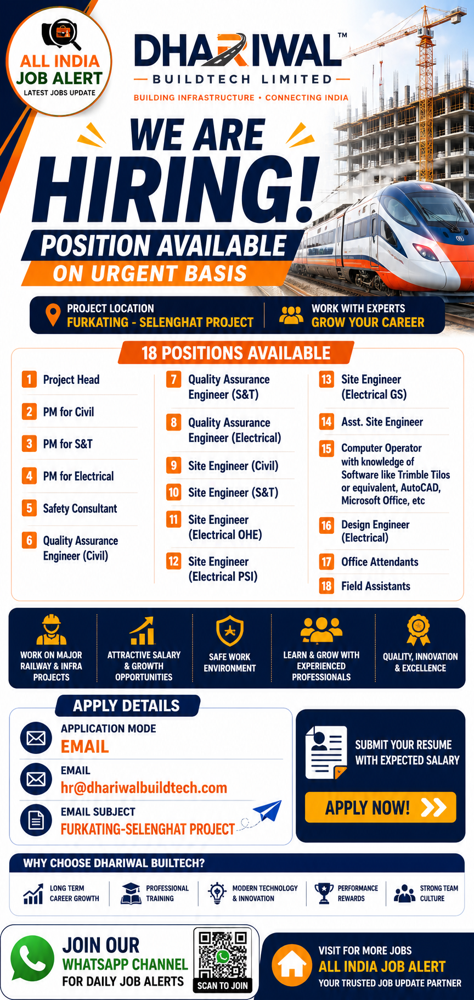

Dhariwal Buildtech Limited has officially announced its latest Recruitment Drive 2026 for multiple engineering, project management and construction positions. The company is inviting experienced professionals for Civil, Electrical, Safety, Quality Assurance, Design Engineering, Site Engineering and Project Management roles. Candidates looking for a rewarding career in railway infrastructure and construction projects can apply through the official email recruitment process.
Dhariwal Buildtech Limited is a rapidly growing infrastructure and construction company involved in large-scale railway, electrical and civil engineering projects across India. The organization is known for delivering quality work, maintaining high engineering standards and offering excellent career opportunities to skilled professionals. Employees receive exposure to modern infrastructure projects, professional training and long-term career growth.
| S.No | Position |
|---|---|
| 1 | Project Head |
| 2 | Project Manager (Civil) |
| 3 | Project Manager (S&T) |
| 4 | Project Manager (Electrical) |
| 5 | Safety Consultant |
| 6 | Quality Assurance Engineer (Civil) |
| 7 | Quality Assurance Engineer (S&T) |
| 8 | Quality Assurance Engineer (Electrical) |
| 9 | Site Engineer (Civil) |
| 10 | Site Engineer (S&T) |
| 11 | Site Engineer (Electrical OHE) |
| 12 | Site Engineer (Electrical PSI) |
| 13 | Site Engineer (Electrical GS) |
| 14 | Assistant Site Engineer |
| 15 | Computer Operator |
| 16 | Design Engineer (Electrical) |
| 17 | Office Attendant |
| 18 | Field Assistant |
Dhariwal Buildtech Limited is a reputed infrastructure and engineering company specializing in railway, civil, electrical and industrial construction projects across India. The company is committed to delivering world-class infrastructure by maintaining high engineering standards, modern technology and strict quality control systems.
Over the years, Dhariwal Buildtech has successfully executed multiple large-scale railway infrastructure, electrical systems, civil engineering and project management assignments. The company believes in innovation, teamwork and continuous improvement while providing employees with excellent learning opportunities and long-term career growth.
Selected candidates will be responsible for managing and executing railway infrastructure and construction projects according to their assigned departments. Project Heads and Project Managers will supervise project planning, execution, budgeting, manpower management and coordination with clients. Site Engineers will monitor day-to-day construction activities, ensure quality work, maintain safety standards and prepare daily progress reports.
Quality Assurance Engineers will inspect construction quality, conduct testing procedures and ensure compliance with company standards. Electrical Engineers will supervise OHE, PSI, GS and electrical installations. Design Engineers will prepare technical drawings and engineering solutions. Computer Operators will maintain project documentation using software such as AutoCAD, Trimble Tilos, Microsoft Office and other project management tools.
Dhariwal Buildtech Limited offers attractive salary packages based on qualifications, experience and interview performance. Employees receive career growth opportunities, professional training, exposure to large-scale railway infrastructure projects, performance-based increments, paid leave, insurance benefits and a professional working environment with experienced engineering teams.
Interested and eligible candidates can apply by sending their updated Resume/CV to the official recruitment email. Your resume should include your latest qualification, work experience, current location, expected salary, notice period and contact details. Mention the required email subject exactly as specified by the company to ensure your application reaches the correct recruitment team.
Application Mode: Email
Official Email:
hr@dhariwalbuildtech.com
Email Subject:
FURKATING-SELENGHAT PROJECT
Candidates should send their updated resume with their expected salary. Only shortlisted candidates will be contacted by the recruitment team. Ensure all information provided in your application is correct before submitting.
1. Which company is hiring?
Dhariwal Buildtech Limited.
2. What is the application mode?
Email.
3. What is the official email?
hr@dhariwalbuildtech.com
4. What should be the email subject?
FURKATING-SELENGHAT PROJECT
5. Should I mention expected salary?
Yes, mention your expected salary in your application.
6. Is this a full-time job?
Yes.
7. Which departments are hiring?
Civil, Electrical, S&T, Quality Assurance, Safety, Design and Project Management.
8. Who can apply?
Candidates with relevant qualifications and experience.
9. What documents are required?
Updated Resume, Educational Certificates, Experience Certificates and ID Proof.
10. Does Dhariwal Buildtech provide career growth?
Yes, employees receive long-term career opportunities and exposure to major infrastructure projects.
Join our WhatsApp Channel to receive daily Private Jobs, Government Jobs, Walk-in Interviews and Engineering Recruitment Updates across India.
Join WhatsApp Channel